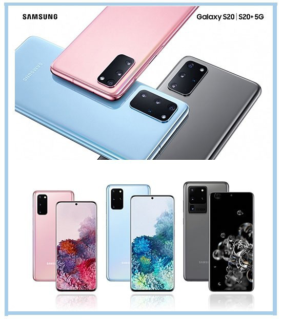
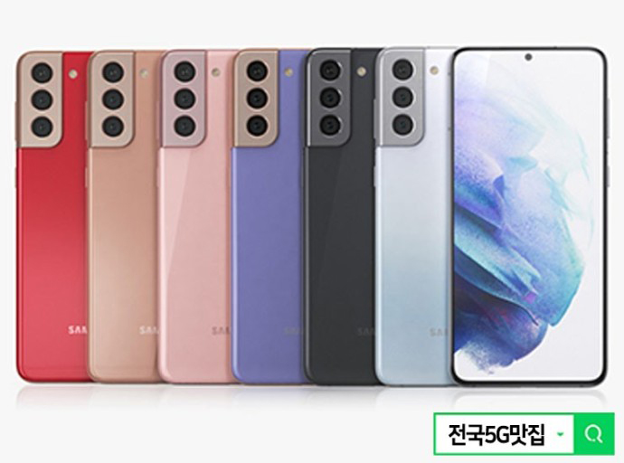
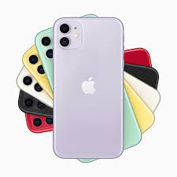

역사
최초의 스마트폰은 사이먼(Symon)으로 추정된다.
스마프트폰은 컴퓨터를 결합한 무선 휴대전화기이다. PC에서 실행되는 운영체제보다 작게 만든 모바일 운영체제를 탑재하여 인터넷 검색, 전자우편, 간단한 문서 편집, 카메라, 오디오 및 비디오 재생 등 PC의 기능을 거의 모두 갖추고 있다.
최초의 스마트폰은 사이먼(Symon)으로 추정된다.
안드로이드(영어: Android)는 휴대 전화를 비롯한 …… 포함하고 있는 소프트웨어 스택이자 모바일 운영 체제이다.
아이폰(영어:iphone)은 2007년 1월 9일, 애플이 발표한 휴대 전화 시리즈이다.
|  |  |  |